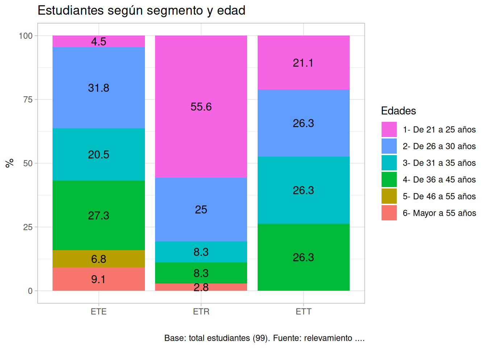
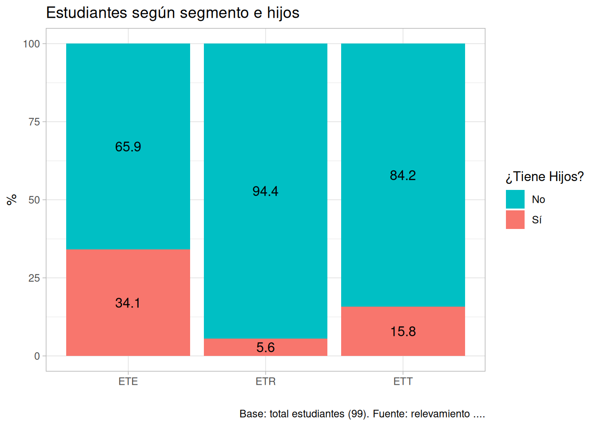
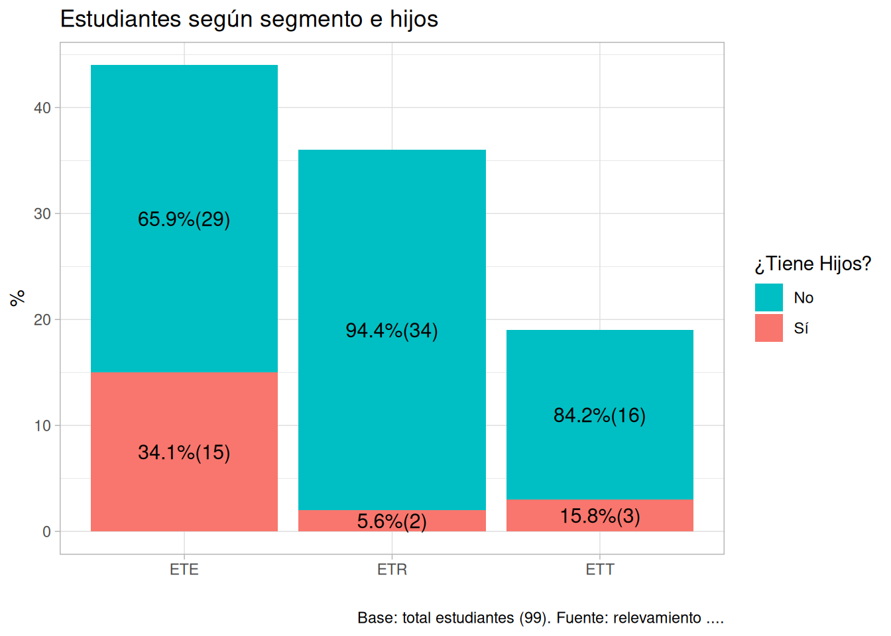

# liberias ---
library(dplyr)
library(ggplot2)
library(here)
# llamo a la base
df <- readRDS(here("input", "base_2024_final_anoni1 (3).rds")) |>
janitor::clean_names() |>
filter(carrera == "1- Sociología")
# parametros
anio_encuesta <- 2024
duracion_carrera <- 5
# transformacion de la base agrego la variable segmentos
df <- df |>
mutate(
segmentos = case_when(
p48 == "1- Soy graduadx o entregué la tesina y estoy esperando fecha de defensa" ~ "ETT",
p48 == "2-Soy estudiante" & p27 < anio_encuesta - duracion_carrera ~ "ETE",
p48 == "2-Soy estudiante" & p27 >= anio_encuesta - duracion_carrera ~ "ETR",
TRUE ~ "Otra situación" )
) Graficos y tablas para tesis
Tabla 1 - segmentos según edad agrupada
Paso 1: creo la tabla de resumen
segmentos_edad <- df |>
group_by(segmentos,edad_r) |>
summarise(estudiantes_n = n_distinct(id)) |>
mutate(estudiantes_prop = round(estudiantes_n/sum(estudiantes_n)*100,1)) `summarise()` has regrouped the output.
ℹ Summaries were computed grouped by segmentos and edad_r.
ℹ Output is grouped by segmentos.
ℹ Use `summarise(.groups = "drop_last")` to silence this message.
ℹ Use `summarise(.by = c(segmentos, edad_r))` for per-operation grouping
(`?dplyr::dplyr_by`) instead.head(segmentos_edad)# A tibble: 6 × 4
# Groups: segmentos [1]
segmentos edad_r estudiantes_n estudiantes_prop
<chr> <chr> <int> <dbl>
1 ETE 1- De 21 a 25 años 2 4.5
2 ETE 2- De 26 a 30 años 14 31.8
3 ETE 3- De 31 a 35 años 9 20.5
4 ETE 4- De 36 a 45 años 12 27.3
5 ETE 5- De 46 a 55 años 3 6.8
6 ETE 6- Mayor a 55 años 4 9.1Paso 2: me ayudo con esquisser a armar el gráfico llamando a esquisser(segmentos_edad)
Paso 3: edito el código y le cambio otras cosas. por ej. acá le agregamos otro geom. Hago una lectura línea por línea para incorporar los conceptos que me ayudó a escribir esquiesser
ggplot(segmentos_edad) +
aes(x = segmentos, y = estudiantes_prop, fill = edad_r) + # 👈 estructura general
geom_col() + # 👈 geometría elegida
scale_fill_hue(direction = -1) + # 👈 dirección del color
labs(x = " ", # 👈 Etiquetas del cuerpo del gráfico
y = "%",
title = "Estudiantes según segmento y edad",
caption = "Base: total estudiantes (99). Fuente: relevamiento ....",
fill = "Edades") +
geom_text( # 👈 Agreho una nueva geometría de texto para ponerle los valores de cada categ.
label = segmentos_edad$estudiantes_prop,
position = position_stack(vjust = 0.5),
size = 4)+
theme_light()
Paso 4: Replico el código por otras variables categóricas de de mi interés
Primero creo la tabla…
segmentos_hijos_menores <- df |>
mutate(p06 = if_else(p06 == "1- Sí", "Sí","No")) |> # transformacion previa de las etiquetas
group_by(segmentos,p06) |>
summarise(estudiantes_n = n_distinct(id)) |>
mutate(estudiantes_prop = round(estudiantes_n/sum(estudiantes_n)*100,1)) `summarise()` has regrouped the output.
ℹ Summaries were computed grouped by segmentos and p06.
ℹ Output is grouped by segmentos.
ℹ Use `summarise(.groups = "drop_last")` to silence this message.
ℹ Use `summarise(.by = c(segmentos, p06))` for per-operation grouping
(`?dplyr::dplyr_by`) instead.head(segmentos_hijos_menores)# A tibble: 6 × 4
# Groups: segmentos [3]
segmentos p06 estudiantes_n estudiantes_prop
<chr> <chr> <int> <dbl>
1 ETE No 29 65.9
2 ETE Sí 15 34.1
3 ETR No 34 94.4
4 ETR Sí 2 5.6
5 ETT No 16 84.2
6 ETT Sí 3 15.8y luego copio y Hago el gráfico cambiando la fuente y variable de relleno (fill)
ggplot(segmentos_hijos_menores) + # 👈 cambio la tabla
aes(x = segmentos, y = estudiantes_prop, fill = p06) + # 👈 cambio el fill
geom_col() +
scale_fill_hue(direction = -1) +
labs(x = " ",
y = "%",
title = "Estudiantes según segmento e hijos", #👈 cambio el títilo y el fill
caption = "Base: total estudiantes (99). Fuente: relevamiento ....",
fill = "¿Tiene Hijos?") +
geom_text(
label = segmentos_hijos_menores$estudiantes_prop,# 👈 cambio la tabla
position = position_stack(vjust = 0.5),
size = 4)+
theme_light()
Combinar dos valores en geom_text() con paste0()
Otra opción del gráfico con N en vez de porcentaje y dejo los porcentaje como parte de la etiqueta
ggplot(segmentos_hijos_menores) +
aes(x = segmentos, y = estudiantes_n, fill = p06) + # 👈 ponemos el N en el eje Y
geom_col() +
scale_fill_hue(direction = -1) +
labs(x = " ",
y = "%",
title = "Estudiantes según segmento e hijos",
caption = "Base: total estudiantes (99). Fuente: relevamiento ....",
fill = "¿Tiene Hijos?") +
geom_text(
#👈 en la etiqueta combinamos con paste los dos valores de la tabla
label = paste0(
segmentos_hijos_menores$estudiantes_prop,
"%",
"(",
segmentos_hijos_menores$estudiantes_n,
")"),
position = position_stack(vjust = 0.5),
size = 4)+
theme_light()